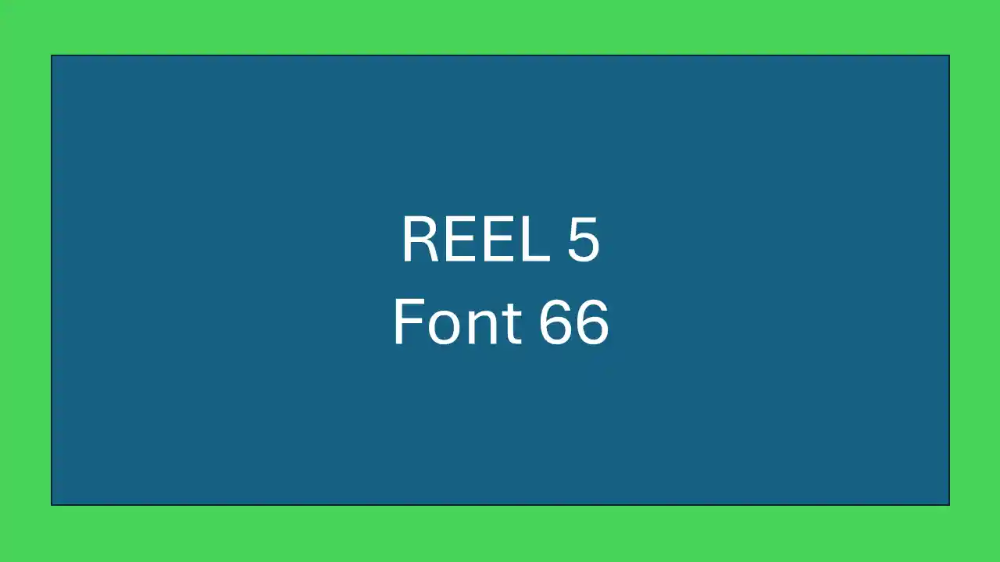
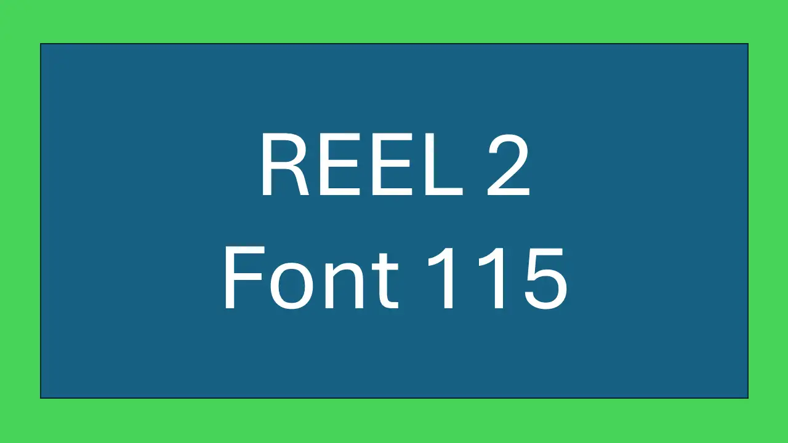
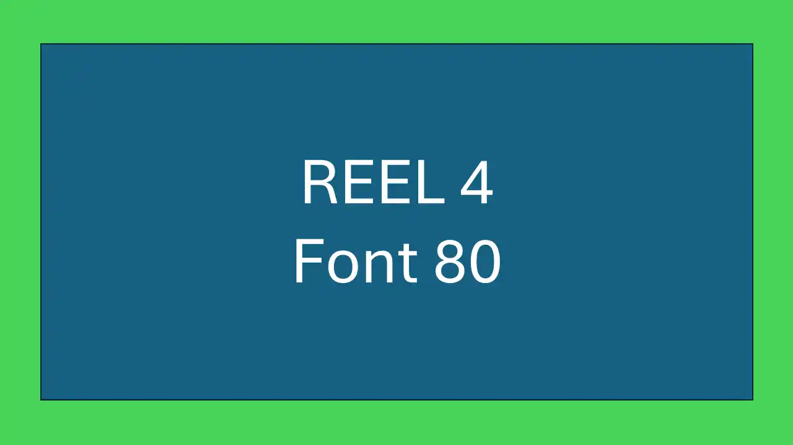

Advancing Gerontological Care Through Data Science
As a Senior Lecturer at the University of Tokyo, my work sits at the intersection of geriatric nursing and advanced data analytics.
Research
Exploring cognitive health and nursing technology.
Explore Section ❯Publications
Peer-reviewed articles in high-impact journals.
Explore Section ❯Data Analysis
Methodologies derived from clinical datasets.
Explore Section ❯Teaching
Mentorship and curriculum at UTokyo.
Explore Section ❯Insights Blog
Reflections on healthcare and academia.
Explore Section ❯Contact
Collaboration and speaking inquiries.
Explore Section ❯